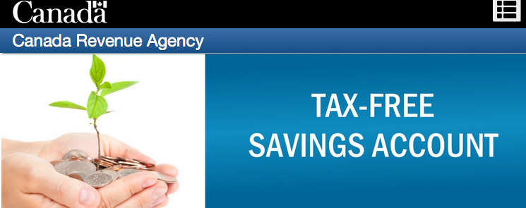
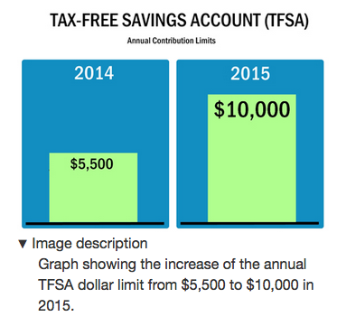
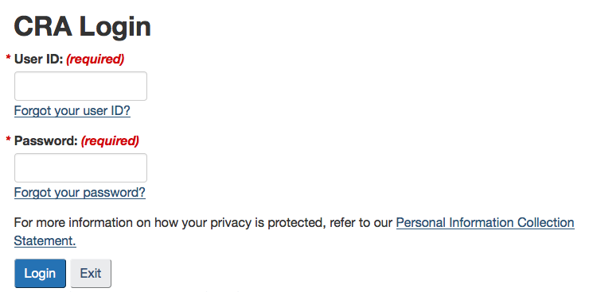

CheckMark Tutoring: How-To Guides for Canadians
CheckMark Tutoring: How-To Guides for Canadians *Note: the information below has been updated for 2018
{kind=link}
Q: What is a TFSA?
A TFSA is the first place you should be putting any money you have saved. I believe the RRSP should come second unless you are in a very high income tax bracket.
In Canada, a Tax-Free Savings Account (TFSA) is a registered investment vehicle available to anyone who is 18 years of age or older and who has a valid social insurance number. Unlike an RRSP, contributions to this 'tax shelter' are not tax-deductible. You must use after-tax income to make your contributions and so there will be no deductions come income tax time (as is the case with an RRSP). The benefit of the TFSA comes with the fact that any investment income/interest earned inside the TFSA will not be taxed AND you can withdraw this money at anytime without penalties. So even if you aren't saving for retirement, it makes sense to keep any additional money you have laying around inside a TFSA.
So isn't it like the exact opposite of an RRSP? Kind of! You don't have to pay tax on money that goes into an RRSP (such as employment income that would normally be taxed), but you are taxed when you take money out since it counts as income at that time. TFSAs on the other hand work in reverse. The money that you put into a TFSA will have been taxed prior to your contribution (if it's money you made from your job), but there will be no taxes any money taken out of your TFSA and it will NOT count as income (so it doesn't affect EI, Old Age Security, etc.).
Q: Where do I go to open up a TFSA?
TFSAs are available at almost all major banks and brokerages. Once your money has been put into a TFSA, it is up to you to decide what to do with the money in order to take full advantage of its benefits. The idea is to make money off your money. You can do this with a high-interest savings account, GICs, mutual funds, ETFs (exchange traded funds), stocks, bonds, etc. Technically you can have multiple TFSAs as long as the combined amount of money from all accounts does not exceed your contribution limits (unless you feel like paying a fee). Just make sure that if you move money between TFSAs that you are transferring the money and not withdrawing and then depositing the money (unless you feel like paying fees again). To do this, ask for a "direct transfer" from your bank/brokerage.
*WARNING: Each bank/brokerage will have their own investment, administration and other fees and it is important you do your research so you aren't surprised by any 'hidden costs'.
Q: How much can I contribute?
When an individual turns 18, they can contribute the full annual contribution limit for that given year. The annual contribution limit in 2009 and up to and including 2012 was $5,000, followed by $5,500 for 2013 and 2014, $10,000 for 2015, and $5,500 for 2016 and beyond.
Even if someone has a birthday in November of a given year, they would be able to contribute the same amount as someone who's birthday was in January since they were both born in the same year.
OK, so how much room do you have? Even though I am an old man (or feel like it anyway) and turned 18 well before 2009, my contribution room starts from 2009 since TFSAs didn't exist before then. So had I not already made contributions, I would have the maximum allowable contribution room for a TFSA. To calculate my total TFSA contribution room, I would multiply $5,000 by 4 (for 2009, 2010, 2011 and 2012), add $5,500 multiplied by 2 (for 2013 and 2014), $10,000 for 2015, and then add $5,500 multiplied by 3 (for 2016-2018). Therefore, my total contribution room in 2018 would be $57,500 if I had not contributed to my TFSA previously.
Keep in mind that money that is gained OR lost inside of a TFSA does not affect the TFSA contribution limit for the following year. So just because your investments 'bomb' and you lose $3,000 of the $5,500 you contributed that year, does NOT mean that you can add another $3,000 to the remaining $2,500 in your account. The only time that contribution rooms will be affected is if you withdraw money. This is discussed in one of the questions below. You will also not be able to claim 'capital losses' to reduce your tax liability like you would in an unregistered account. What did you expect? You can't have your cake and eat it too!
*WARNING: Make sure you don't over contribute to your TFSA or a tax of 1% on the excess contribution will be applied. If your contribution limit is $5,500 and you contribute $10,500, then you will pay a monthly tax of $50 ($10,500 - $5,500 = $5,000 excess). So it's possible to have a tax applied to a Tax-Free Savings Account? Yes it's as stupid as it sounds. So don't do it or you will be defeating the purpose of opening a TFSA.
Q: OK, I think I understand how much contribution room I have... But just to be on the safe side, is there somewhere I can go to confirm the exact amount of room I can contribute to my TFSA?
Yes there is! And it is a good place to check out even if you have made contributions in the past as it gives a detailed transaction summary as well. You will need to create an account with the CRA but once you have done this, you will be able to determine the amount of money you can add to your TFSA without being penalized. Click here (https://www.canada.ca/en/revenue-agency/services/e-services/e-services-individuals/account-individuals.html) to get started.
{kind=link}

Q: When can I contribute?
You may deposit money into a TFSA at any time during the year once you have turned 18. All unused contributions will be carried forward indefinitely so there is no pressure to get the money in before a certain date.
Q: What if I want to take money out of my TFSA?
Taking money out of your TFSA is called a withdrawal. There are no penalties for taking money out of a TFSA and you may do so at anytime. However, the broker/bank in which your TFSA investments are held may have fees that you should pay attention to.
Whatever amount of money you withdraw from a TFSA in a given year can be added back to the TFSA in the following year. So if in 2015 you took $5000 out of your TFSA, you could add that amount back to your TFSA in addition to any unused contribution room you have in 2016. This means that if your investments do well and make you money, then in effect they will permanently increase your contribution room if you were to ever withdraw that money. Here's an example... Jack turned 18 in 2018 and the annual contribution limit is $5,500. He put $5,500 dollars into his TFSA immediately and made $5,000 in investment income from his contributions over the course of the year. He decided to withdraw all $10,500 at the end of the year (still 2018). Jill also turned 18 in 2018 but decided to wait until 2019 to put her money into the bank. In 2019, Jill would be able to contribute $11,000 to her TFSA. However, since you are able to re-contribute whatever amount you withdraw from your TFSA, Jack is actually able to contribute $16,000 in 2019 ($5,500 annual contribution + the $10,500 he withdrew in 2018).
Q: So now that I have my money in the TFSA, what should I invest in?
Once again, it depends on your current situation and short-term/long-term goals (e.g. age, major purchases in the near future such as a house, retirement, etc.). ETFs and index funds, which are discussed on other pages, are considered to provide the best long-term growth for your money. However, since your money is at the mercy of the stock market in these types of investments, it may not be wise for someone who needs to make sure they have money in the short-term (e.g. need money for retirement that is looming, home purchase, etc.). In that case, it would make sense to use safer investments that are not as risky and are less of a roller coaster ride for your money. Savings account, bonds and GICs would serve this purpose.
*IMPORTANT: If you have analyzed your situation and decided that you are going to have a combination of stocks/index funds/ETFs AND investments that accumulate interest (e.g. GICs, bonds, savings accounts) then it would make the most sense to have the latter in the TFSA. Interest is generally taxed at a higher rate than capital gains or dividends that you accumulate from stock market investments. Therefore, it makes sense to keep them sheltered inside your TFSA where interest CAN'T be taxed.
Comments - Ask questions and/or provide feedback below!
*you can comment as a guest without registering/signing in by clicking on the 'Name' box below and checking the 'I'd rather post as a guest' box. If you don't feel comfortable providing your own email, you can just make one up (e.g. fakeemail@gmail.com).